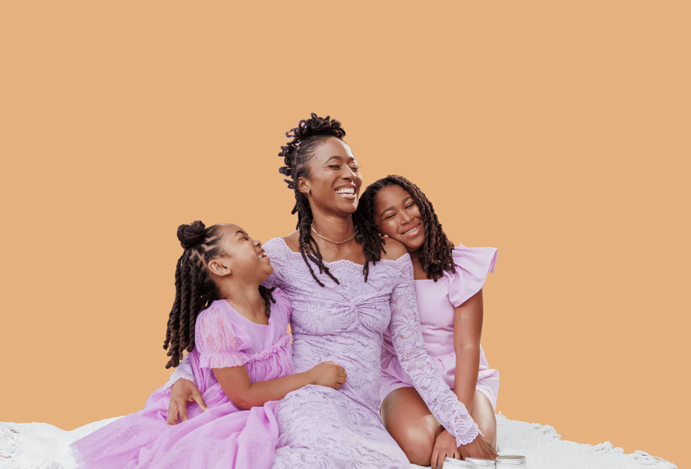
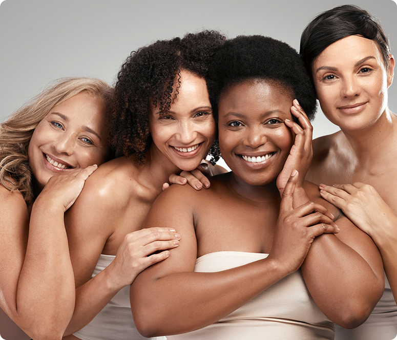

A USUAL PORTUGAL LDA. é uma marca portuguesa especializada em produtos de saúde íntima, focados na higiene feminina e infantil. Introduzida pela primeira vez em Moçambique no ano 2008.

A USUAL PORTUGAL LDA. é uma marca portuguesa especializada em produtos de saúde íntima, focados na higiene feminina e infantil. Introduzida pela primeira vez em Moçambique no ano 2008.
A USUAL PORTUGAL LDA. é uma marca portuguesa especializada em produtos de saúde íntima, focados na higiene feminina e infantil. Introduzida pela primeira vez em Moçambique no ano 2008, hoje garante uma posição relevante em todos os mercados informais, bem como nos estabelecimentos comercias. Com sedes na Europa (Portugal) e África (Moçambique), a USUAL PORTUGAL LDA. é composta por uma equipa profissional e experiente que trabalha de forma contínua para desenvolver e distribuir produtos inovadores, que englobem as necessidades especificas dos seus consumidores. Para além de oferecer produtos de qualidade, a USUAL PORTUGAL LDA. propõe-se ainda a promover o conhecimento na área da saúde feminina e infantil.
Porque nos escolher?
Proteção contra vazamentos: Todos os nossos produtos foram projetados para se ajustarem ao corpo, proporcionando proteção eficaz contra vazamentos.
Conforto: Os nossos pensos, fraldas e toalhitas são feitos com materiais macios e respiráveis, para manter o conforto durante todo o dia.
Absorção avançada: Os nossos pensos higiénicos e fraldas oferecem tecnologia de absorção avançada, que ajuda a manter a pele seca e protegida durante todo o dia. Discrição: Os nossos pensos foram desenhados de forma discreta, sendo facilmente usados sob roupas justas, proporcionando conforto e confiança durante o período menstrual.
Controle de odores: Projetados para neutralizar odores, a nossa gama promove a sensação de frescor e limpeza.
Fácil de usar e descartar: Apostamos na fácil aplicação e descarte, oferecendo conveniência e praticidade durante o ciclo menstrual e o dia-a-dia de um(a) pai/mãe.
Segurança: As nossas toalhitas contém água pura filtrada por Osmose Reversa (RO) e esterilizada por raios ultravioleta, para dar ao seu bebé proteção pura.
Firma: USUAL PORTUGAL, LDA
Sede Portugal: Rua Diogo Cão #3, loja 2. 2660-445 Santo António dos Cavaleiros, Portugal.
Endereço telefónico Portugal: +351 21 988 1178
Endereço eletrónico Portugal: info@usual.pt Website Portugal: Usual.pt
Sede Moçambique:
Avenida Base Ntchinga 319, Maputo, Moçambique.
Endereço telefónico Moçambique: +258 840600171
Endereço eletrónico Moçambique: info@usual.co.mz Website Moçambique: Usual.co.mz
Os valores da USUAL PORTUGAL LDA. são designados pela sigla EQUITE, cuja palavra tem o significando “igualdade” ou “justiça”.
A sigla EQUITE é composta pelos valores:
• Educação;
• Qualidade;
• União;
• Impacto Social;
• Transparência;
• Empoderamento Feminino
A USUAL PORTUGAL LDA. tem como principal missão promover o bem-estar físico e mental, empoderando e educando mulheres, quebrando estigmas e tabus em torno da saúde feminina e ainda ser um aliado no desenvolvimento dos seus descendentes. Adicionalmente, a USUAL PORTUGAL LDA. tem como visão ser a escolha incomparável no que toca á saúde íntima, em todas as fases da vida.

O nosso objetivo é posicionar a USUAL PORTUGAL LDA. como mais do que uma marca de produtos femininos - um universo destinado a inspirar, educar e criar uma conexão autêntica com mulheres modernas. Assim sendo, queremos oferecer ás nossas clientes a segurança de apostar em produtos de qualidade vindos de uma marca que se importa com elas, redefinindo a USUAL PORTUGAL LDA. como um verdadeiro "girl hub", uma amiga confiável e fonte segura. A USUAL PORTUGAL LDA. tem ainda como objetivo restaurar a credibilidade da marca, reconstruindo a sua reputação como uma fornecedora confiável de produtos higiénicos originais, combatendo a contrafação e promovendo boas práticas de higiene íntima.
Adicionalmente, a marca pretende ainda expandir para o universo infantil, sendo uma fonte de conforto e de alívio para as mães/pais. Queremos ser um porto seguro, com produtos que os pais sabem que podem ser utilizados nos seus bens mais preciosos sem nenhum medo ou dúvida. Finalmente, a USUAL PORTUGAL LDA. tem ainda o objetivo de ser acolhedora e abrangente, com produtos como as fraldas para adultos, garantindo apoio em todas as fases da vida. Objetivos específicos:
• Combater a contrafação da marca através de medidas legais e de segurança;
• Conscientizar o público sobre a existência de produtos não reconhecidos da marca, destacando os riscos associados ao uso de produtos contrafeitos;
• Educar os consumidores sobre como diferenciar os produtos originais dos contrafeitos;
• Promover boas práticas de higiene íntima, destacando a importância dos produtos originais da marca para a saúde e o bem-estar;
• Ganhar credibilidade através de ações transparentes e consistentes;
• Alcançar níveis altos de vendas e credibilidade a longo prazo, consolidando a posição da marca como líder no mercado de produtos higiênicos;